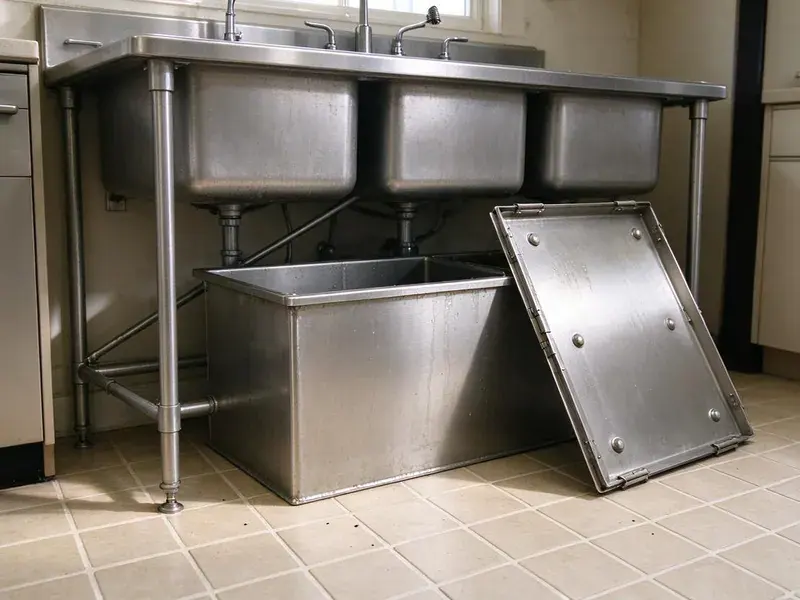

Insinkerator Installation in Urbandale, IA
For dependable Insinkerator installation in Urbandale, IA, KFR Plumbing is your trusted local plumbing expert. We make sure your new garbage disposal is set up correctly and efficiently.
- Expert, licensed plumbers
- Licensed and Insured Plumbers
- Upfront Pricing
- Prompt, reliable service
Get a quieter, stronger InSinkErator installed this week in Urbandale, IA.
Our team is ready to provide prompt and reliable Insinkerator installation for your home or business.
Professional Insinkerator Installation in Urbandale, IA
KFR Plumbing specializes in professional Insinkerator installation, helping homeowners and businesses in Urbandale, IA upgrade their kitchens with dependable waste disposal units. We handle all models, providing proper wiring, plumbing connections, and testing for top performance and safety.
Our expertise includes:
- Proper mounting and sealing techniques
- Dishwasher drain knockout removal and air gap connection
- Complete testing for leaks and function

Additional Kitchen Plumbing Services in Urbandale, IA
Our kitchen plumbing services in Urbandale, IA cover sinks, disposals, dishwashers, and grease traps so your kitchen stays clean, safe, and fully functional.


Customers
Why Choose KFR Plumbing for Insinkerator Installation in Urbandale, IA?
An InSinkErator only performs as well as its install, and a crooked mount or low trap arm causes leaks and slow drains. Our plumbers set every unit level, sealed and properly vented to the existing drain line.
- Reliable Function, We test every new Insinkerator thoroughly to confirm proper operation, grind efficiency, and leak-free performance.
- Local Expertise, Our plumbers are familiar with Urbandale, IA plumbing codes and typical home layouts, ensuring compliant and efficient installations.
- Tested Before Leaving, We run water, grind a test load and check every joint for leaks.
Citywide Coverage
From older neighborhoods with original cast iron drains to newer subdivisions with PVC, we cover all of Urbandale. Our schedulers can often book an install the same day or the next morning.
Experienced Team
The KFR Plumbing team brings years of focused experience to every Insinkerator installation. We stay updated on the latest models and installation techniques, ensuring a professional job every time.
Safety-First Approach
Our plumbers check that the dishwasher drain has a proper air gap or high loop, which most plumbing codes require to prevent backflow. We also seal all connections to keep water off the cabinet floor.
Trusted Certified Urbandale Plumbing Services Professionals
At KFR Plumbing, we take pride in providing certified plumbing services throughout Urbandale, IA. Backed by recognized industry credentials, our experienced plumbers combine technical skill with genuine customer care. Whether it is repair, installation, or maintenance, we follow strict safety and quality standards to deliver lasting results you can trust.
Call Us Now PHCC Plumbing Contractor Recognition
PHCC Plumbing Contractor Recognition Better Business Bureau (BBB) Accreditation
Better Business Bureau (BBB) Accreditation Angi Certified Pro
Angi Certified Pro ISO 9001 Quality Management Certification
ISO 9001 Quality Management CertificationDependable Insinkerator Installation Services in Urbandale, IA
Evolution Series Upgrades in Urbandale, IA
Evolution models like the Compact, Septic Assist and Excel use multi-stage grinding and extra sound insulation. They break down fibrous foods such as celery and corn husks that can jam lighter units. We install Evolution disposals for families who cook often and want a quieter kitchen. Because these units are taller and heavier, we check cabinet clearance and trap height before we mount them. The result is a smoother grind and fewer clogs downstream.

Replacement of Existing Garbage Disposals in Urbandale
If your current garbage disposal in Urbandale is failing, we provide prompt replacement services, often with an Insinkerator unit. We begin by safely disconnecting and removing the old disposal, carefully cleaning the sink flange area to prepare for the new installation. Our team then installs your chosen Insinkerator model, making all needed electrical and plumbing adjustments. We make sure the new unit integrates seamlessly with your existing sink and drainage system, preventing future issues.
Insinkerator with Air Switch Installation in Urbandale
For added convenience and a cleaner look, many homeowners choose an Insinkerator with an air switch. This allows the disposal to be activated by pressing a button mounted on the countertop, rather than a traditional wall switch. We carefully install these air switches, integrating them cleanly with your new Insinkerator unit. This includes drilling the countertop if necessary and ensuring a safe, reliable connection in your Urbandale kitchen.
New Construction Insinkerator Installation in Urbandale
For new home builds or major kitchen remodels in Urbandale, we provide comprehensive Insinkerator installation from scratch. This service involves installing the necessary plumbing and electrical rough-ins, then fitting the Insinkerator unit once the cabinetry and sink are in place. We work with other contractors to ensure a smooth integration into your new kitchen design, following all local building codes for a perfect finish.
Disposal Replacement and Haul-Away in Urbandale, IA
When an old disposal hums, leaks from the bottom or trips the reset button constantly, replacement is usually smarter than repair. We remove the failed unit, clean the old putty off the sink and install a new InSinkErator in its place. If your old mount is an InSinkErator quick-lock, we can often reuse it to save time. We haul the old unit away so you are not stuck disposing of it. Most replacements finish in a single visit.
InSinkErator Installation Cost Comparison in Urbandale, IA
A basic Badger 5 install with a cord kit usually costs less than a premium Evolution Excel installation. Labor is similar for most swaps, but first-time installs cost more because of new flange work and electrical runs. We give you an upfront price that includes the unit, labor and haul-away. We also compare horsepower, sound levels and warranty length side by side. That way you can choose the model that fits your budget and cooking habits.
Standard Insinkerator Badger Series Installation in Urbandale
The Insinkerator Badger series is a popular choice for many Urbandale homeowners due to its reliability and low price. Our service includes careful removal of your old unit, precise mounting of the new Badger model, secure electrical hookup, and connection to your existing drain lines. We ensure a watertight seal at the sink flange and test the unit thoroughly for proper function, making sure it grinds efficiently and drains correctly before we leave your Urbandale home.

Advanced Insinkerator Evolution Series Installation in Urbandale, IA
For quieter operation and enhanced grinding power, the Insinkerator Evolution series is an excellent upgrade for homes in Urbandale, IA. These models often require specific wiring and plumbing considerations due to their larger size and advanced features. Our plumbers are experienced with all Evolution series disposals, ensuring all sound insulation and grinding components are perfectly aligned. We meticulously check for vibration, noise, and flow rates to guarantee optimal performance in your kitchen.
Insinkerator Installation Near Me in Urbandale, IA
Looking for 'Insinkerator installation near me' in Urbandale, IA? KFR Plumbing is your local solution. Our team of certified plumbers is positioned to respond quickly to your service requests, ensuring prompt and efficient installation of your new garbage disposal. We are proud to be a trusted part of the local community.
If you are searching for reliable "Insinkerator installation near me" in Urbandale, IA, look no further than KFR Plumbing. Our local team is ready to provide prompt and efficient service to all residents and businesses in the area. We understand the plumbing needs of Urbandale homes and are prepared to handle any installation with expertise.
KFR Plumbing at a Glance
- Fully licensed plumbing team covering Urbandale, IA
- 24/7 emergency service with same-day scheduling
- Clear written estimates, no hidden fees
- 4.8-star rated by 620+ Iowa customers
Urbandale Map
Urbandale Information
- Population
- 46,729
- Area codes
- Local
- Service area
- Urbandale and communities within 40 miles
- Nearby
- West Des Moines, Waukee, Des Moines, Ankeny
In Urbandale, IA, proper Insinkerator installation is essential for managing food waste efficiently. Water across much of Iowa comes from groundwater and runs very hard, so scale buildup in water heaters and fixtures is common.
Expert Services
Trust our professionals for reliable KFR Plumbing solutions in Urbandale, IA.
Our Specialized Plumbing Services in Urbandale, IA
At KFR Plumbing, we provide a complete range of plumbing services across Urbandale, IA. From leak detection to full system installations, our team ensures fast, precise, and affordable service for both residential and commercial properties. Explore our core services below:


How Our Insinkerator Installation Process Works in Urbandale, IA
We follow a proven method to ensure every Insinkerator installation in Urbandale, IA is completed to the highest standards of quality and safety.
Request a Quote
Contact us at (515) 308-3583 to discuss your Insinkerator installation needs and receive a transparent, no-obligation quote. We'll gather details about your existing setup or new project.
On-Site Assessment
Our plumber will visit your Urbandale home to assess your kitchen sink, plumbing, and electrical connections. We confirm the best Insinkerator model for your needs and ensure compatibility.
Professional Installation
We carefully install your new Insinkerator, providing proper mounting, secure electrical wiring, and watertight plumbing connections. The unit is tested fully for optimal performance.
Frequently Asked Questions About Insinkerator Installation in Urbandale
The cost for Insinkerator installation in Urbandale, IA usually ranges from $200 to $400 for labor, not including the unit itself. This can vary based on the complexity of the installation, such as electrical modifications or new plumbing runs, and whether an old unit needs to be removed. We provide upfront pricing after reviewing your specific situation.
A simple replacement usually does not need a permit. Adding a new electrical circuit or making significant drain changes may require one, and we will let you know if your job falls into that category.
For a direct replacement of an existing garbage disposal, a permit is usually not required in Urbandale, IA. However, if the installation involves significant new electrical wiring or major alterations to the main drain lines, a plumbing or electrical permit might be necessary. We can explain any permit requirements during our on-site assessment.
Yes, we understand that a broken garbage disposal can be a major inconvenience. We offer emergency Insinkerator installation services in Urbandale, IA to quickly replace a failed unit. Just call us, and we'll dispatch a plumber as soon as possible to restore your kitchen's function.
The Badger series are entry-level, dependable disposals for basic grinding needs. The Evolution series offers advanced multi-stage grinding, quieter operation, and larger capacities, designed for tougher food waste and a quieter kitchen. Your choice depends on your usage and budget.
KFR Plumbing provides a warranty on our labor for Insinkerator installations, usually covering issues related to workmanship for a specific period. The Insinkerator unit itself comes with its own manufacturer's warranty, which varies by model, often ranging from 1 to 10 years. We will explain both warranties.
A straight swap typically takes about one hour. First-time installations or jobs that require new wiring or drain changes can take two to three hours.
While some homeowners attempt DIY installation, it's often best left to professionals. Improper installation can lead to leaks, electrical hazards, or damage to the unit or your plumbing. Professional installation ensures safety, proper function, and adherence to local codes.
What People Are Saying About Our Plumbing Experts?

Sofia M.
Two new toilets installed in one visit, no mess left behind, and the tech even adjusted a faucet he noticed was dripping. Fair pricing and really friendly.
Toilet Installation · Des Moines, IA
James P.
Our commercial plumbing system had a leak under the sink, and KFR Plumbing handled it professionally. The plumbers arrived quickly and restored everything without disruption to our customers.
Commercial Plumbing · West Des Moines, IA
Patricia H.
We had a slab leak that two other companies could not find. KFR Plumbing located it in under an hour, explained our options, and the price matched the quote to the dollar.
Slab Leak Repair · Cedar Falls, IALaura S.
I scheduled a water heater replacement, and the team made the process smooth and affordable. The new unit works perfectly, and they cleaned up after completing the job.
Water Heater Replacement · Ankeny, IA
Daniel K.
A pipe burst at 11 pm and they actually answered. The plumber showed up within the hour, shut everything down, and had us back to normal the next morning. Could not ask for more.
Emergency Plumbing · Ames, IA
Mark T.
When our office needed drain cleaning, KFR Plumbing provided quick, reliable service. The plumber arrived on time and made sure every drain flowed perfectly before leaving. Very satisfied.
Drain Cleaning · Urbandale, IA